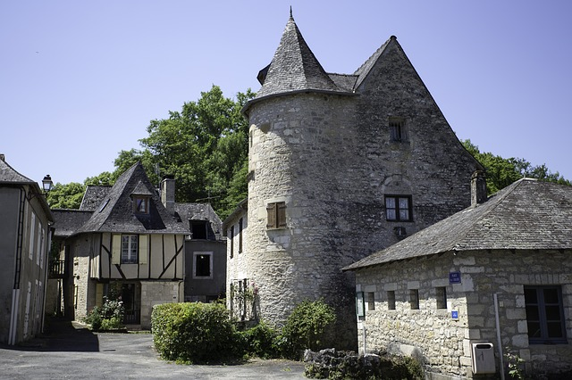
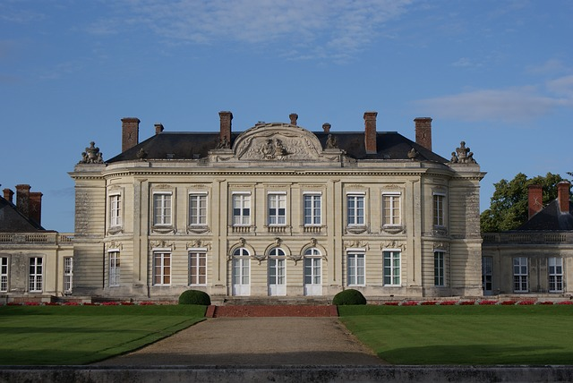
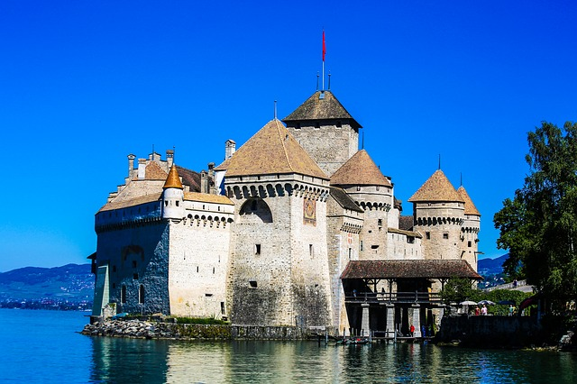

Chateaus
Exploring the last remnants of another age can be adventurous and fun. Fortunately for us, Paris is full
of old chateaus and abandoned mansions!

Chateau De Vaux-Le-Vicomte
This chateau was created in the 1600s and emanates the Louis XIV designs of the time of grand classicism and open concepts. You will see these influences everywhere in Paris today. Despite the beautiful chateau, which most people are familar with, the gardens are the real gem. The gardens were redesigned by Louis XIV's royal gardener and landscaper, Nicolas Fouquet. He created a beautiful design with open space, strong lines, and many fountains! It's a great place to explore!

The Chateau Rothschild
This is an abandoned mansion from the famous Rothschild family built in the 1800s. It was taken over by the Nazis in World War II and now, it is a crumbling estate that is covered in graffiti. All is not lost as this is a place of discovery. The gardens are now a public park and you can enjoy a whimsical afternoon picnic lunch with the view of the old chateau. However, going inside the mansion is not allowed, as the roof is collapsing and unstable.
